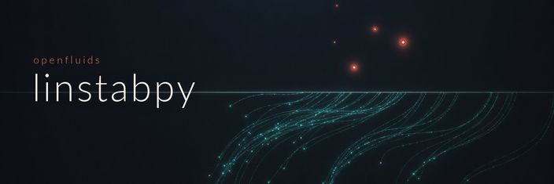

Open tools for fluid flows: state-of-the-art methods, ultra-modern low-memory code, for humans and agents.
Open code for fluid mechanics.
Stability

linstabpylinear stability and resolvent analysis- nekStabstability and bifurcation for Nek5000
Analysis
- openmodalpynine modal decompositions, one API
 dynachaosLyapunov exponents, recurrence, entropy
dynachaosLyapunov exponents, recurrence, entropy fftkitspectra, one FFT API over eight backends
fftkitspectra, one FFT API over eight backends dsgbrpeaks in noisy, sloped spectra
dsgbrpeaks in noisy, sloped spectra chaos-atlaschaotic systems in the browser
chaos-atlaschaotic systems in the browser